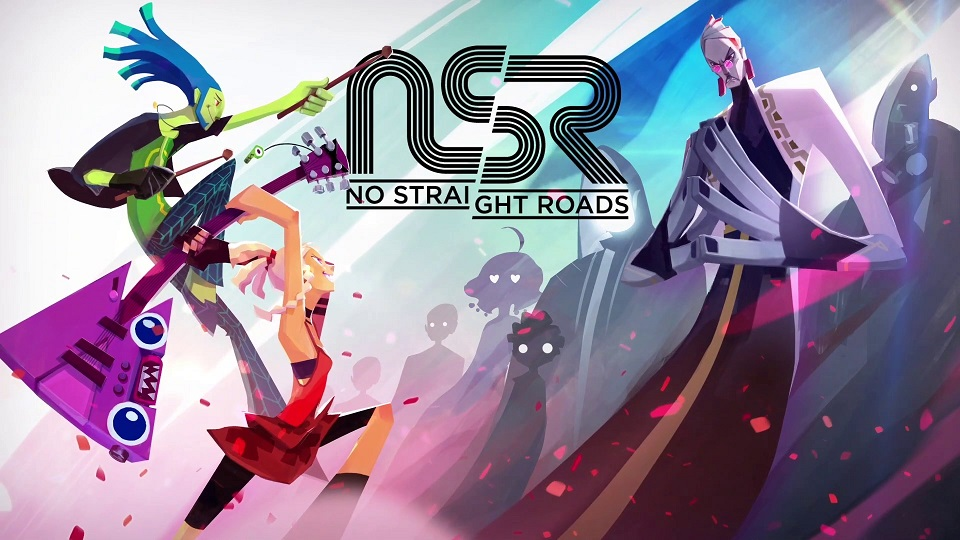

No Straight Roads
No Straight Roads is an indie game developed by Metronomik. The game takes place in Vinyl City, a town that is powered by music. The dominant genre is EDM and all other genres are outlawed. You take control of an indie rock band taking down the government with their music and making a name of themselves. This game is incredibly unique. Along with an amazing soundtrack, the enemies attacks are all rythm based, further immersing the player into a music world. The visuals are bright and colorful with interesting character design. The game is a little buggy, but it is definitely worth playing!

Prev Video Games Next